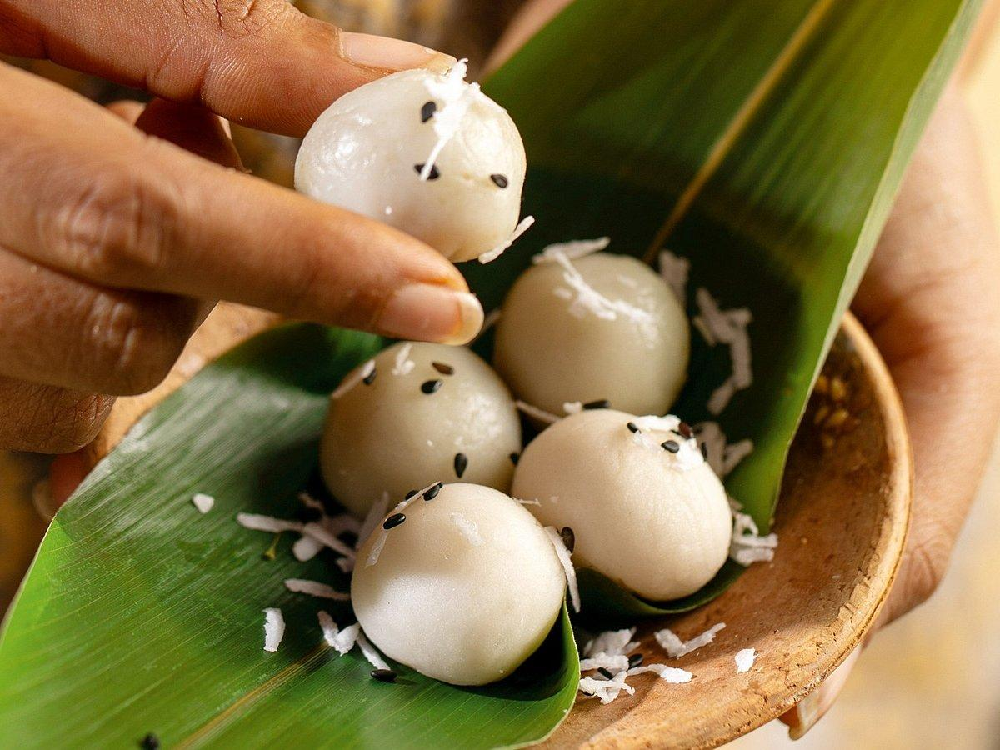
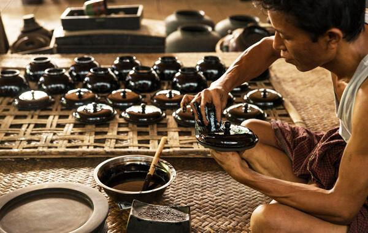

Discover Myinkaba Village
Explore the traditions, culture, local knowledge, and everyday life of Myinkaba Village in Myanmar.
Explore Our HeritageAbout Our Project
Our Place, Our Heritage is a community awareness project focused on Myinkaba Village in the Bagan area of Myanmar.
This website aims to introduce the village's culture, local knowledge, daily life, food, clothing, crafts, festivals, and customs.
We are working to learn from local community members and share their knowledge with others.
Our Purpose
Our goal is to introduce Myinkaba Village and help visitors learn about its culture, traditions, and community life.
Through this website, we hope to encourage people to appreciate local heritage and understand the importance of preserving cultural knowledge for future generations.
Explore Our Heritage
Discover different parts of life and culture in Myinkaba Village.

Daily Life
Learn about everyday activities and life in the local community.

Food and Traditions
Discover local food, traditional dishes, and food customs.

Clothing and Crafts
Explore traditional clothing, handmade crafts, and local skills.

Festivals and Customs
Learn about community celebrations, customs, and cultural traditions.